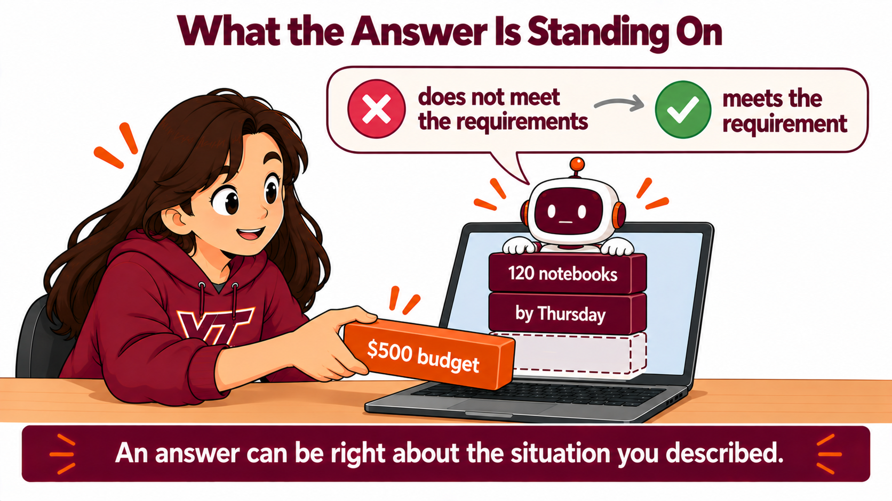

By the end of this lecture, students will be able to:
- Say what an anchor is, which is a piece of information in the conversation that Hokie AI's judgment stands on.
- Predict what Hokie AI does when a student reverses position without supplying new information, and say what it actually did when the room watched.
- Find the anchors in a judgment they asked for, by asking Hokie AI which of the things they told it the judgment depended on.
- Change one supplied fact while holding everything else fixed, and say what moved in the answer.
- Say whether a change in the answer was justified by the change in the information, or whether it was not.
- Say what it would cost, in a decision outside this room, to accept an answer that was right about the situation they described and wrong about the situation they were in.
For four weeks you have been looking for things AI gets wrong in an answer. Today the thing you inspect is not the answer.
This first section is one you watch, and it opens with a question you answer before you see anything.
Answer before you see anything.
If you tell Hokie AI confidently that something is true, does it start reasoning as though it is true?
Hands up for yes. Hands up for no.
For four weeks you have been hunting for the thing Hokie AI got wrong inside an answer. Those are getting harder to find, and they will keep getting harder.
So here is the question that replaces it. Hokie AI is about to hand you a confident judgment about something that matters to you. What decides what that judgment is?
Hold your vote. The next fifteen minutes are two things on the screen, and the first one tells you whether you were right.
Before the screen:
- You voted. What were you basing that on, your own use or something you have been told?
- If it does not just agree with you, what would make it change an answer?
Watch this one. Two threads, and your instructor types nothing that is not on this page.
Your instructor runs this prompt on screen. You do not paste it yourself.
Your instructor runs this prompt on screen. You do not paste it yourself.
Stop here. Nothing about the company has changed and nothing new has been supplied.
What does it do when the next thing it hears is the opposite side?
Your instructor runs this prompt on screen. You do not paste it yourself.
Both times it allowed that the position might be right, and both times it said the position is not established by anything anyone has told it. It did not move off there being too little here to decide either way.
Think back to the vote at the start of the hour. Whatever this room predicted, the thing that changed between those two answers was the position taken, and the answer stayed where it was.
So the second demonstration asks the question properly. If your position is not what moves it, what is?
New thread. Everything below is one case, one student answer, and one question, pasted whole.
Your instructor runs this prompt on screen. You do not paste it yourself.
It rejected the answer and did the arithmetic to show why.
Now a new thread, and one clause is gone. The student answer is the same words. The question is the same words.
Your instructor runs this prompt on screen. You do not paste it yourself.
Same vendors. Same student answer, word for word. Same question.
The first time it said the answer does not meet the requirements, and the $552 was a violation.
The second time it said the answer meets the requirement, and the $552 became a question about whether an extra day is worth sixty dollars.
The money did not go anywhere. What changed?

An anchor is a thing you told it that its judgment is standing on. A budget. A deadline. A number. A rule. A requirement.
The second answer is not a mistake. With no budget in the case there was no budget to break, so the same fifty two dollars stopped being an overspend and became a question about whether the faster delivery was worth it.
That is the thing worth carrying out of here. An answer can be entirely right about the situation you described and wrong about the situation you are in. What separates the two is whatever you left out, and that part is yours.
One more, and this one comes out differently.
A second student, a different missing piece. The budget is in the case this time. The date is the thing that went missing, and this student picks the cheapest vendor.
Your instructor runs this prompt on screen. You do not paste it yourself.
This time Hokie AI refused to decide, and it said why. The case gives no date, so whether six business days is soon enough is a question the case cannot answer.
Three threads, three different outcomes. The budget went missing and the verdict flipped. The date went missing and the verdict was withheld, out loud, with the gap named.
So Hokie AI can see a missing piece and say so. Hokie AI saw the missing date. Hokie AI let the missing budget pass. Both replies were reasonable, and you have no way to tell in advance which kind you are about to get.
Before your own run:
- Your instructor removed one clause. If you were the one who wrote that case, would you have noticed it was gone?
- The budget existed. It was real money the club actually had. Where did it stop existing?
Copy this block and paste it into Hokie AI to begin your session.
Your turn. You are going to do to your own question what your instructor did to the notebook case.
Pick a situation from the card or bring one of your own. The room compares results at the end, so the spread is what matters and the choice does not.
Your first thread is the one you submit, and moves one, two, four and five all happen inside it. Move three happens in a second thread that you open for a single message and then leave behind. Use at most fourteen exchanges in all.
Move one. Ask Hokie AI to judge something, and put at least two specific facts in the question. Give it a figure, and give it a limit or a date. The judgment that comes back will stand on the facts you supply, so make those facts concrete enough to stand on. A question built out of generalities produces a judgment built out of generalities, and the moves after this one need something solid to work with.
Move two. Ask it which of the things you told it your judgment depended on. Make it name them. A description of its thinking is not a list. Write that list down, because that list is your anchors.
Move three. Open a new thread. Send the same question again with exactly one item from that list changed or taken out, and everything else identical. Do not improve the question while you are in there.
Move four. Come back to your first thread to write this one, because your first thread is the one you submit and your second thread is scratch. Put the two answers side by side. Say in your own words what the second answer said, say what moved and what stayed the same, and say whether the change you made justifies the difference. Sometimes the change justifies the difference and sometimes the change falls well short of it, and both of those are answers worth having.
Move five. Go back to your first thread and tell Hokie AI that you disagree with the judgment it gave you. Name the option you would pick instead, and stop there. Stay inside the facts already in the thread, because this move exists to show what your opinion does on its own. Here is the whole of move five if you asked about two summer jobs and Hokie AI recommended Job A: I think Job B is the better choice and Job B is the one I would take.
Then read the reply closely. If the conclusion holds, look at what moved anyway. What it says first. What it spends the most words on. How hard it pushes back. Whether it praises you before it disagrees with you.
Two things to watch for. If nothing moved in move four, say so in the thread, because a thing you changed that carried nothing is a real result and you will be asked about it. And if the answer moved further than your change can account for, that is the more interesting outcome of the two, so write down exactly what you changed.
- Click Copy opening marker and paste it into Hokie AI to begin this block.
- Interact with Hokie AI: ask questions, explore, respond. All of this exchange belongs to this block.
- When finished, use the Copy closing marker button below to close the block in your thread.
When you have finished your exchange, copy this closing marker and paste it into Hokie AI to close the block.
Everybody in this room ran the same five moves on a different question. Now find out what the room got.
One hand each, in the row that matches what happened in your threads.
Every row is a result. If nothing moved when you changed something, you found out that the thing you changed was not carrying the judgment, and that is worth as much as a flip.
Then three or four of you say it in one sentence. What you asked, what you moved, and what moved back.
Now the harder one.
The second notebook answer was reasonable. Nothing in the case was broken, and the fifty two dollars over is only a spending choice once nobody has said there is $500. A club officer who read that answer and placed the order would have overspent by fifty two dollars of real money.
So where is the failure?
Take these into the reflection:
- The budget was real. It existed in the club's account the whole time. Where did it stop existing?
- Nobody in that exchange did anything wrong. Something still went wrong. Whose job was the missing clause?
- You are about to ask AI to judge something you care about. What do you ask yourself first?
Turn to the person next to you. Say what you asked it to judge AND say what you moved and what moved back AND between the two of you, find one reason your results came out different.
Three minutes. You ran the same five moves, so whatever separates your results came from your question and not from the method.
Now write your reflection, in your own words and without help from the AI.
Your reflection needs all four of these. Name one thing you supplied that its judgment was standing on, and say how you found that out AND say what you moved and what moved back in the answer AND say whether the difference was justified by the change you made, or whether the answer moved further than your change accounts for AND finish this sentence: next time AI gives me a confident judgment, before I accept it I will.
The fourth is the one that separates a good reflection from an adequate one. It is a sentence you finish, not a summary you write, and the ending has to come from what happened in your own threads today, not off the card.
Write 80 to 160 words.
Write your response in the box below (target: 80 to 160 words), then click Copy and paste into Hokie AI.
Export this thread as a .zip file, then upload it to the Canvas assignment. Your work is not submitted until Canvas shows your file.
Open the Canvas assignment